// COLDCARD Q MANUAL
COLDCARD Q MANUAL
처음 콜드카드를 받은 분들을 위한 기본 설정 가이드
고급 기능 및 활용법 가이드
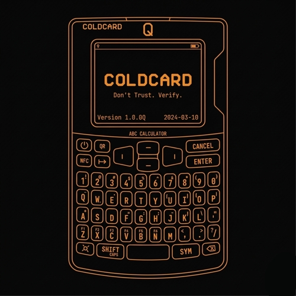
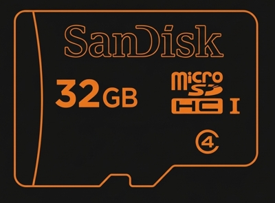
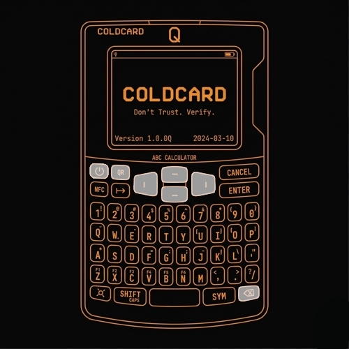
-
I뒷면에 AAA 배터리 3개를 넣거나 USB-C 케이블을 연결합니다.
⚠ USB-C 연결 시 반드시 충전기에 연결하십시오. 컴퓨터에 연결 금지. -
II기기 왼쪽 상단의 전원 버튼을 1초간 눌러 켭니다.
-
III첫 화면에서 이용약관이 나옵니다. 방향키로 아래로 내린 뒤 ENTER.
-
IV기기의 시리얼 넘버가 나옵니다.
콜큐 박스에 동봉된 시리얼 넘버와 일치하는지 확인합니다. 변조 여부 점검.시리얼 넘버 확인
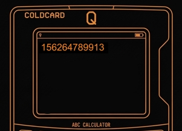
-
V화면과 일치한다면 OK. 방향키로 내린 다음 ENTER.
-
I가장 위에 Choose PIN Code 선택.
-
II설명 화면이 나옵니다. 요약하면:
1. PIN 번호는 접두사(앞자리)와 접미사(뒷자리) 두 부분으로 나뉩니다.
2. 접두사 2~6글자, 접미사 2~6글자로 설정 가능.
3. 접두사를 입력하면 기기가 안티 피싱 단어를 보여줍니다.
⚠ PIN 코드를 잃어버리면 복구할 방법이 전혀 없습니다. 반드시 적어놓으세요.
-
III설명을 읽었으면 화면에서 누르라는 번호를 터치. 다음으로 넘어갑니다.
-
IV앞자리 / 뒷자리 두 칸이 보입니다.
무엇을 앞자리, 뒷자리에 넣을지 미리 정합시다.
⚠ PIN 코드를 잃어버리면 복구할 방법이 전혀 없습니다. 적어놓으세요. -
V핀 번호 접두사(앞자리)를 입력하면 두 개의 단어가 뜹니다.
이 두 단어를 기억하십시오.
앞자리를 맞게 입력했을 때 항상 같은 단어가 표시됩니다.
-
I콜드카드 공식 홈페이지에 접속한다.
coldcard.com → Docs 클릭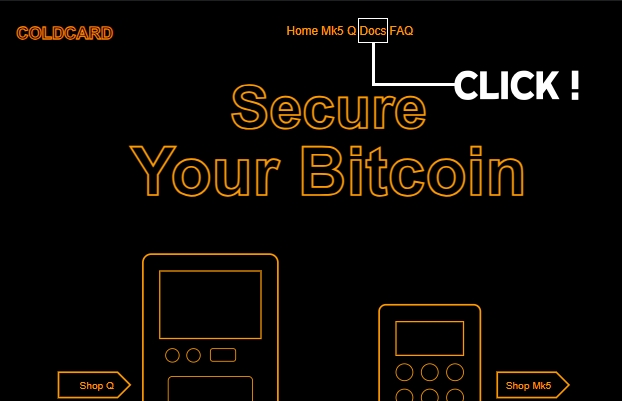
-
IIHow to upgrade firmware 클릭
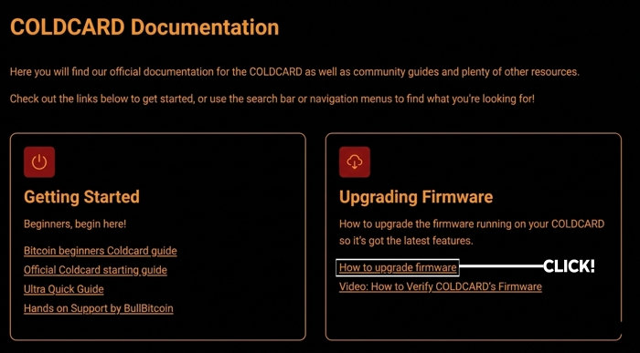
-
IIICOLDCARD Q 펌웨어 클릭 → 다운로드
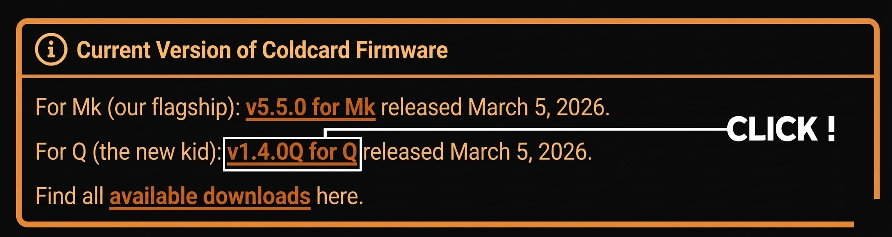
-
IV다운받은 파일을 마이크로 SD 카드에 넣는다.
-
V마이크로 SD 카드를 콜드카드큐에 꽂는다.
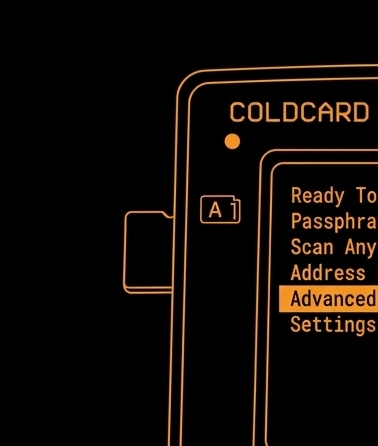
-
VIAdvanced/Tools → Upgrade Firmware → From MicroSD
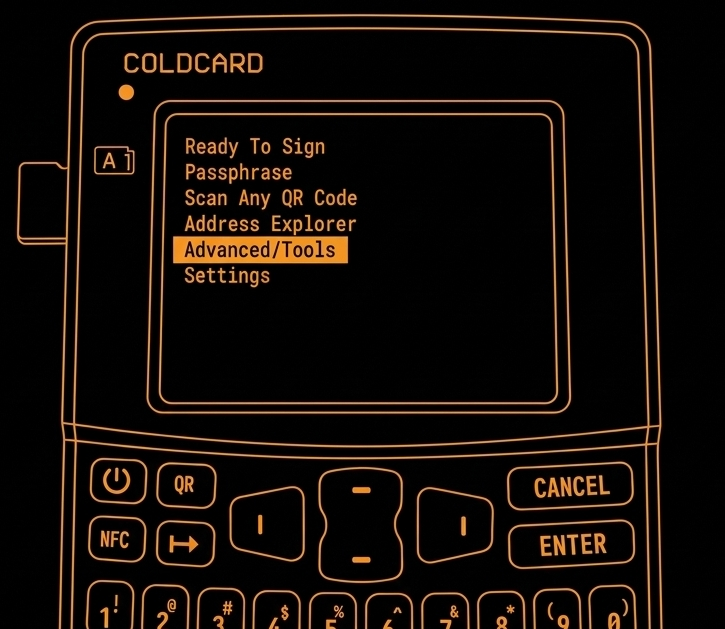
-
VII다운받은 파일이 보이면 선택하여 실행.
스크롤을 내린 뒤 실행.
콜드카드 Q에 비트코인 지갑을 생성합니다.
△ 주변에 카메라가 없는지 확인하시오.
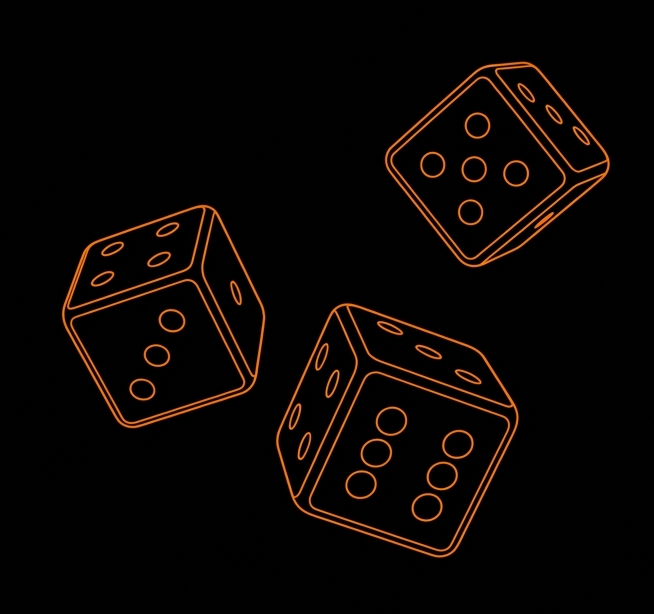
-
I직접 주사위를 굴립니다.
-
II굴려서 나온 숫자를 종이에 적으세요.
-
III또 굴리고, 또 적습니다. 다수 반복하여 계속 적으세요.
-
III이렇게 적은 숫자는 최소 50개 이상이 필요합니다.
-
INew Seed Words → Advanced → 12word Dice Roll
-
II종이에 적어둔 숫자를 차례대로 입력하십시오.
-
III50개 이상의 숫자를 입력한 다음 ENTER
-
I니모닉을 종이에 적어두십시오.
-
II니모닉을 절대 컴퓨터나 스마트폰에 적지 마십시오.
△ 만약 주변에 카메라가 있다는 걸 뒤늦게 눈치챘다면 처음부터 다시 진행하십시오.
-
III니모닉을 종이에 다 옮겨 적었다면 → ENTER
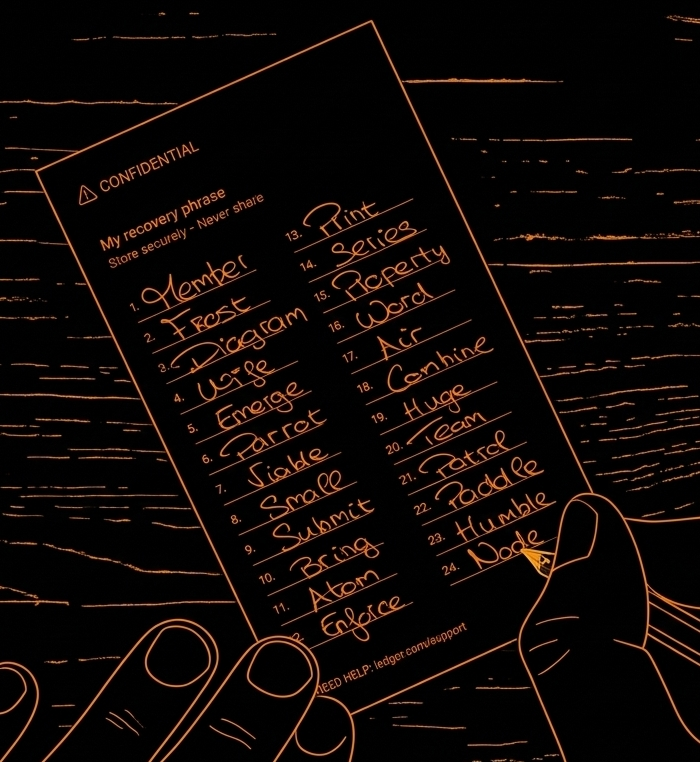
-
I니모닉을 적은 종이는 나만 아는 장소에 잘 보관하십시오.
-
II니모닉은 본인 외 아무도 봐선 안됩니다.
-
III중요한 것은 자신의 니모닉을 잘 관리하는 것입니다.
NOT YOUR KEY, NOT YOUR BITCOIN.
이미 보유 중인 니모닉을 콜드카드 Q에 등록합니다.
(다른 기기에서 사용하던 지갑을 복원하거나, 수기로 생성한 시드를 등록할 때 사용합니다.)
△ 주변에 카메라가 없는지 반드시 확인하십시오.
-
I콜드카드 Q 전원을 켠다.
PIN 이 없는 초기 상태라면 아래 화면이 나타납니다.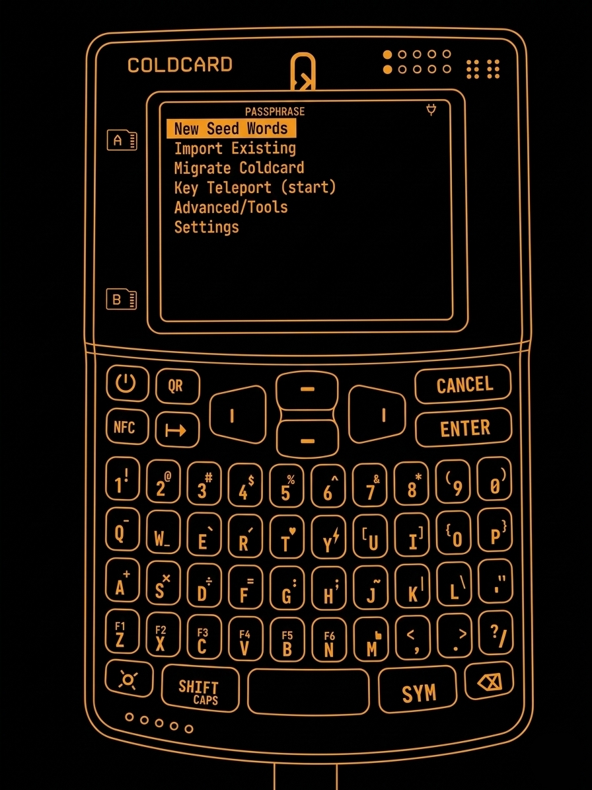
-
IIImport Existing 선택
-
III니모닉 단어 수를 선택한다.
12 Words 또는 24 Words -
IV키보드로 단어를 한 글자씩 입력합니다.
맞는 단어를 선택한 뒤 → ENTER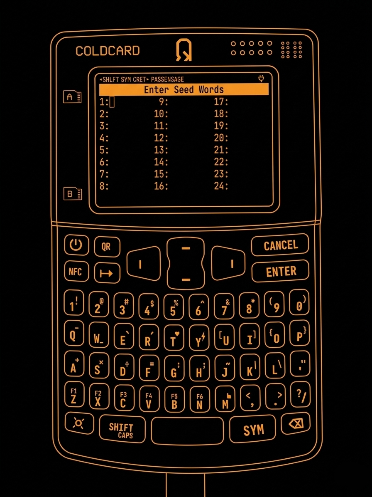
-
V등록 완료.
이후 PIN 설정으로 진행됩니다.
(PIN 설정은 초기설정 가이드를 참고하십시오.)
니모닉 입력 중 단어 순서가 하나라도 틀리면,
전혀 다른 지갑이 복원됩니다.
△ 순서와 철자를 반드시 정확히 확인하십시오.
마지막 단어 선택 목록에 본인의 단어가 없다면,
이전에 입력한 단어 중 오타가 있는 것입니다.
△ 처음부터 다시 입력하십시오.
※ 니모닉 단어는 모두 BIP-39 영어 단어 목록에서 나옵니다. 철자가 확실하지 않을 경우 자동완성 후보를 참고하십시오.
-
VI니모닉 입력 중 절대 사진 찍지 마십시오.
-
VII등록 후 와치온리앱의 MFP와 대조하여 동일한 지갑인지 확인하십시오.
COLDCARD Q ) Export Wallet
콜드카드의 지갑을 와치온리앱에 임포트.
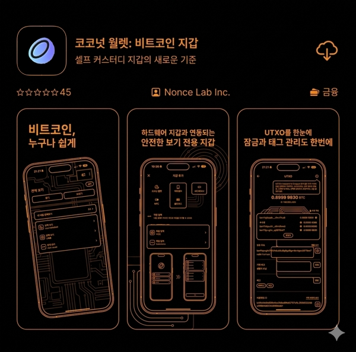
코코넛월렛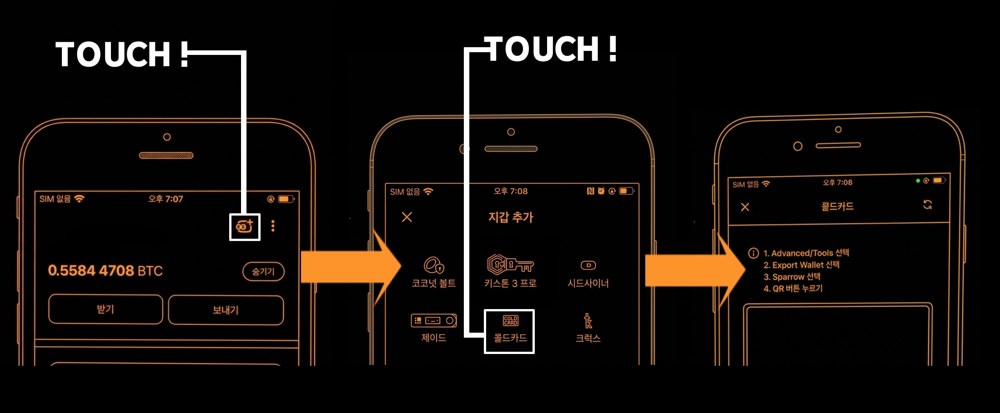
-
I코코넛월렛 앱 실행
-
II지갑추가 버튼 TOUCH
-
III콜드카드 TOUCH
-
IVQR 스캔 화면이 나오면 대기
-
IAdvanced
-
IIExport Wallet
-
IIISparrow
-
IV화면에 표시된 번호 클릭
-
VQR 버튼 클릭
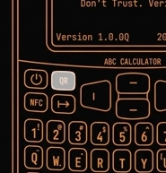
아이폰 와치온리앱으로 카메라를 통해 BBQR 을 읽어드린다.
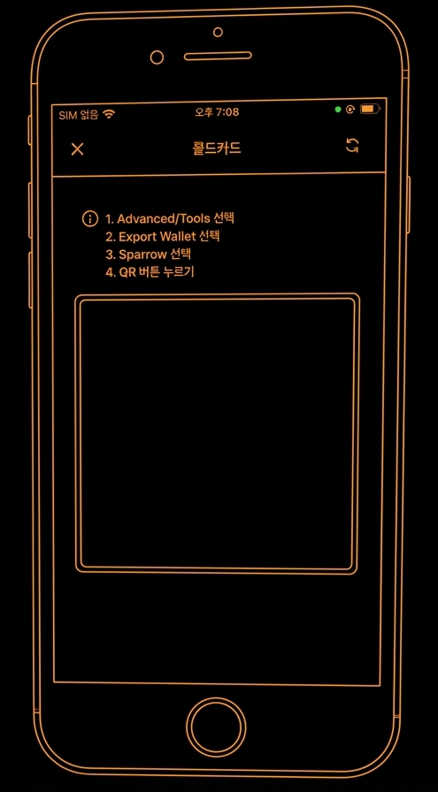
-
I첫화면에서 등록한 지갑 TOUCH
-
II지갑이름 TOUCH
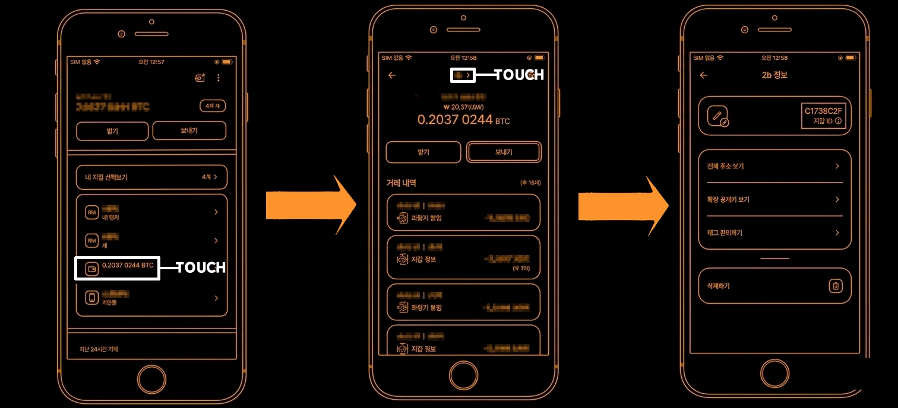
-
IIIMFP 일치 확인
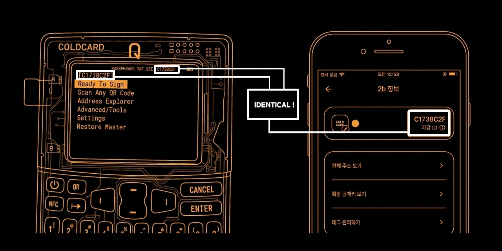
와치온리 앱(Sparrow·Nunchuk·Bluewallet 등)에 표시되는
멀티시그 공개주소가
실제로 내 콜드카드에서 파생된 주소가 맞는지
콜드카드 본체로 직접 검증하는 절차입니다.
콜드카드 Q의 Scan Any QR Code 기능으로 와치온리 앱이 보여주는 주소 QR을 스캔하면,
그 주소가 내 키(또는 내가 등록한 멀티시그 정책)에서 나온 주소인지 자동 판별해 줍니다.
△ "Trust the device, not the screen" — 컴퓨터 화면은 변조될 수 있으니 콜드카드 본체의 결과를 신뢰합니다.
◆ 컴퓨터·휴대폰이 멀웨어에 감염되면 와치온리 앱의 주소가 공격자 주소로 위조되어 표시될 수 있음
◆ 멀티시그는 여러 키 조합으로 만들기 때문에 한 키만 일치한다고 안전한 주소가 아님 — 콜드카드가 전체 정책을 검증
◆ 거래소·서비스에 출금 주소로 등록하기 직전 — 큰 금액일수록 필수
◆ 새 입금 주소를 받을 때 — 첫 사용 전 1회 검증
-
I와치온리 앱(Sparrow / Nunchuk / Bluewallet 등)에서 Receive 또는 주소 목록 화면을 엽니다.
-
II검증할 멀티시그 주소를 QR 코드로 표시
(대부분 앱이 주소를 클릭하면 QR로 보여줌) -
III콜드카드 Q 메인 메뉴 → Scan Any QR Code
-
IV카메라가 켜지면 와치온리 앱 화면의 주소 QR을 스캔
-
V콜드카드가 등록된 멀티시그 정책과 비교하여 결과 표시:
◆ "Address Mine" — 내 주소가 맞음 (안전)
◆ "Address NOT Mine" — 내 주소가 아님 (절대 사용 금지) -
VI결과가 Mine이면 해당 주소를 안심하고 사용
◆ 새 입금 주소를 만들었을 때 — 첫 사용 전 1회
◆ 거래소/서비스에 출금 주소로 등록하기 직전
◆ 큰 금액(1 BTC 이상)을 받을 때 — 매번 검증 권장
◆ 와치온리 앱·컴퓨터가 의심스러울 때 — 즉시 검증
◆ 멀티시그 구성을 변경한 직후 — 주소 파생이 정상인지 확인
◆ 멀티시그 검증을 위해선 콜드카드에 멀티시그 정책이 먼저 등록되어 있어야 함
◆ "Address NOT Mine" 결과가 나오면 절대 그 주소로 입금하지 말 것
◆ 검증은 와치온리 앱이 아닌 콜드카드 본체 화면의 결과를 기준으로 함
◆ 단일 서명(Single-sig) 주소도 동일한 방법으로 검증 가능
◆ Scan Any QR Code는 주소 외에 PSBT·시드QR·BIP-329 라벨 등도 인식
△ 검증을 게을리하면 멀웨어 감염 시 공격자 주소로 입금하는 사고로 이어집니다. 금액이 클수록 더 자주 검증하세요.
◆ 와치온리 화면의 주소를 그대로 믿지 않는다
◆ 콜드카드 Q의 Scan Any QR Code로 한 번 더 확인
◆ "Address Mine"이 떠야만 안전한 주소
◆ 멀웨어 방어의 마지막 관문
기본 니모닉 (12글자 or 24글자) 에 나만의 비밀 문장을 추가하여 새로운 지갑을 만듭니다.
기존 지갑에 비밀번호를 추가하는 게 아닙니다.
기존과 다른 새로운 지갑을 만드는 겁니다.
△ 패프를 설정하면, 지갑이 새롭게 만들어진다.

당신이 니모닉을 생성했습니다. 지갑이 만들어졌죠.
이 지갑 이름을 철수 라고 지었습니다.
당신은 만든 지갑에 패스프레이즈로 abc 라고 적었습니다.
그럼 새로운 지갑 영희가 만들어집니다.
이번엔 패스프레이즈에 aaaaa 라고 적었네요.
그러면 또 새로운 지갑 광수가 만들어집니다.
△ 패스프레이즈로 지갑을 무수히 많이 만들 수가 있습니다.
패스프레이즈에게 틀렸다 는 개념은 없습니다.
타이핑을 잘못 쳤다면 새로운 지갑이 또 하나 만들어질 뿐입니다.
또한 대다수의 콜드월렛은 한번 전원을 껐다 키면,
패스프레이즈를 입력하기 전의 기본 니모닉 지갑으로 돌아옵니다.
그럼 다수개의 지갑을 만들었다면 어떻게 구분할 수 있을까요?
MFP — Master Fingerprint 지갑의 고유식별값
MFP 는 지갑을 구분하기 위해 사용됩니다.
이해하기 쉽게 말하자면,
라고 생각하면 됩니다.
위에서 언급한 철수 영희 광수 라고 언급한 지갑 이름 말이죠.
MFP 는 콜드월렛과 와치온리앱 두 군데서 모두 표시됩니다.
△ 양쪽의 MFP 가 일치한다면, 같은 지갑이 등록된 것.
-
I패스프레이즈는 틀렸다는 개념이 없다. 계속 새로 만들어질 뿐이다.
-
II패스프레이즈는 콜드월렛에 저장 안된다. (재부팅 후 매번 새로 쳐야한다.)
-
III패스프레이즈를 잊어먹으면 끝장이다.
◆ THE B SOCIETY 의 멤버는 모두 '팔지 않겠다' 고 약속한 호들 전용 지갑을 따로 두고 있습니다.
◆ 혹은 가족 구성원의 지갑을 각각 만들고 싶을 때, 니모닉을 공유하고 패스프레이즈만 서로 다르게 하여 각자 지갑을 관리하는 것도 방법입니다.
◆ 정수로 맞춘 메인 지갑, 호들 지갑, 잔돈 지갑으로 구분할 수도 있습니다.
◆ 패스프레이즈를 이용해 추가 지갑을 만들었다면, 기본 니모닉 지갑과 패스프레이즈로 생성한 지갑 두 개를 모두 watch-only app 에 등록해 두길 추천합니다. (혼동 방지를 위해)
COLDCARD Q ) BIP-322 Generic Message Signing
내 소유의 비트코인 UTXO에 메시지를 새길 수 있다.
이는 곧 '내가 이 수량의 비트코인 소유자' 라는 검증이기도 하다.
BIP-322는 최신 주소 체계(SegWit, Native SegWit, Taproot 등)에서
주소 소유권을 증명할 수 있게 만든 차세대 표준 서명 방식.
ONLY ONE. COLDCARD Q.
△ 콜드카드 Q가 최신 펌웨어로 업데이트 되어 있어야 합니다.
-
I마이크로 SD 카드를 콜드카드 Q에 삽입한다.
로그인 → Ready To Sign → QR 버튼 누르기 -
II메시지를 각인시킬 비트코인 주소(QR)를
콜드카드 Q로 인식시킨다.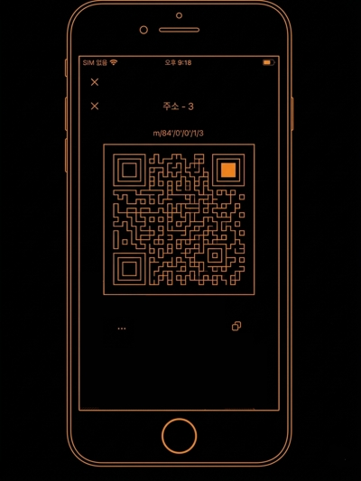
-
III주소 확인 절차 진행.
이후 메시지를 입력하는 창이 뜨면, 준비한 메시지를 입력한다.
완료 후 ENTER 눌러 확정. -
V메시지 서명 파일을 마이크로 SD에 저장할지,
QR 코드로 표시할지 선택하는 화면이 뜬다.
→ 마이크로 SD에 저장을 선택.
-
I콜드카드 Q의 전원을 끄고,
마이크로 SD 카드를 컴퓨터에 연결한다. -
IImsg_sign-signed 라는 이름의 텍스트 파일이 생성되어 있음을 확인한다.
-
Imsg_sign-signed 를 열고 내용을 확인
-
IIBS CARD 탭에 입력해 검증
-
IIIBITCOIN SOCIETY 카드도 받자.→ BITCOIN SOCIETY CARD
콜드카드 Q 는 콜드월렛. 즉, 인터넷이 차단된 기기
이를 이용하여 보안 노트를 제작해 마이크로SD 카드에 저장이 가능합니다.
-
I보안노트 작성
-
IISD카드에 저장
-
IIISD카드에 저장된 노트 불러오기
마이크로 SD 카드 삽입 확인
-
I로그인
-
IIAdvanced/Tools
-
IIIFile Management
-
IVSecure Notes & Passwords
-
VNew Note
-
VI제목 입력 칸에 제목을 입력
-
VII내용 입력칸에 내용 입력
-
VIII확인 버튼을 누름 (↦)
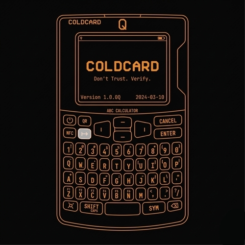
-
IXExport
-
X옵션에서 '마이크로 SD 카드에 저장'에 해당하는 번호를 누름
json 파일과 sig 파일이 만들어졌다
json은 노트 파일. sig는 변조 여부를 검증하는 파일.
-
XIENTER — 완료
여기까지 인터넷이 연결되지 않은 상황에서 보안노트가 만들어졌습니다.
⚠ 중요 — 단, 니모닉은 적으면 안됩니다.
-
I콜드카드 Q에서 SD카드를 뽑는다
-
II콜드카드 Q 재부팅
-
III로그인 → Advanced/Tools → Secure Notes & Passwords
-
IV아까 작성한 노트가 보인다면 삭제한다.
-
V저장한 문서 선택 → Delete → are you sure? → ENTER
-
I마이크로 SD 카드 다시 삽입
-
II로그인
-
IIIAdvanced/Tools → File Management → List Files
생성된 json 파일과 sig 파일이 보인다면 노트가 만들어진 것이 맞음. ( 1차 확인 )
-
I로그인
-
IIAdvanced/Tools
-
IIISecure Notes & Passwords
-
IVImport
-
V옵션에서 SD카드 읽기에 해당하는 번호 누름
-
VIjson 파일 선택
-
VIIENTER
메뉴에 처음 만들었던 문서 파일이 보이고, 들어가보면 내용이 보인다. ( 2차 확인 끝 )
⚠ 중요 — 보안노트지만 니모닉은 적지 마시오.
콜드카드 Q의 PIN 관련 보안 기능들을 설명합니다.
(Settings → Login Settings 경로에서 설정합니다.)
△ 세팅을 과도하게 설정하면 로그인 시 혼란을 초래할 수 있습니다. 하나씩 확인하며 설정하십시오.
PIN을 10회 연속 오류 입력하면 기기가 완전히 벽돌이 됩니다.
물리적 탈취 상황에서의 무차별 대입 공격을 막기 위한 기본 보안 설계입니다.
△ 이 기능은 완전히 해제할 수 없습니다.
기기 첫 화면을 공학용 계산기로 표시하는 기능입니다.
기기를 보는 사람이 콜드월렛인지 알아채지 못하게 합니다.
-
ISettings → Login Settings → Calculator PIN
-
IICalculator login 선택
-
III재부팅 후 첫 화면이 계산기로 바뀝니다.
-
IPIN 앞부분을 입력한 뒤 스페이스바로 띄어쓰기를 합니다.
(예: PIN이 12345678 이면 → 1234 5678 로 입력)
-
ISettings → Login Settings → Calculator PIN → Default off 선택
-
ISettings → Login Settings → Change Main PIN
-
II기존 PIN 입력
-
III새 PIN 입력 → 재입력 확인
※ 참고 PIN 변경 시 안티 피싱 문구도 함께 변경됩니다. 변경 후 새 문구를 반드시 기억하십시오.
-
ILogin Countdown
PIN 입력 후 일정 시간 동안 로그인을 차단하는 기능입니다.
(권장하지 않음) -
IIScramble Keys
숫자 패드 배열을 매번 무작위로 섞는 기능입니다.
(권장하지 않음) -
IIIKill Key
지정한 키 입력 시 기기 내 모든 비밀 데이터를 영구 파괴하는 기능입니다.
※ Kill Key 경고 Kill Key는 되돌릴 수 없습니다. 설정 전 반드시 종이 니모닉이 안전한지 확인하십시오.
비트코인은 하나의 시드로부터 수많은 비트코인 주소를 계속 만들어내는 구조.
Address Explorer 는 이걸 눈으로 보여줍니다.
내 지갑이 만들어낼 수 있는 모든 주소들의 명부를 기기 안에서 직접 확인하는 보안 검증 도구
콜드카드는 legacy, segwit, taproot 타입을 모두 지원하기에 각각 따로 확인 가능 합니다.
-
I로그인
-
IIAddress Explorer 선택
-
III조회하고 싶은 주소 선택
해당 주소의 QR 코드와 경로 정보를 상세히 볼 수 있다.
주소 일치 확인 — Verification
와치온리앱에 보여지는 받는 주소가 실제 내 주소인지 확인합니다.
내 컴퓨터나 스마트폰이 해킹당했다면 해커는 내가 '입금' 버튼을 눌렀을 때 자신의 주소를 화면에 띄울 수 있겠지요. 와치온리앱 제작자가 내 지갑이 아닌 본인의 비트코인 지갑 주소를 띄웠을 가능성도 있습니다.
이때 Address Explorer를 사용하면
콜드카드 기기 자체 화면에서 주소를 확인할 수 있습니다.
콜드카드가 띄운 주소는 100% 내 주소가 맞고, 따라서 서로 비교해보면 즉시 확인이 가능합니다.
※ 와치온리 앱을 두 개 사용해서 교차검증하는 방법도 있으니 참고하십시오.
콜드카드 Q에 저장된 니모닉(시드)을 기기에서 삭제합니다.
(기기를 양도하거나, 지갑을 완전히 초기화할 때 사용합니다.)
니모닉 지우기는 콜드카드 Q 기기 내부의 시드만 삭제합니다.
당신이 종이에 적어둔 니모닉은 그대로 남아 있습니다.
즉, 지우기 전에 종이 니모닉이 안전한지 반드시 확인하십시오.
종이 니모닉만 있으면 언제든 새 기기에 복원할 수 있습니다.
△ 종이 니모닉 없이 지우면 비트코인을 영구적으로 잃습니다.
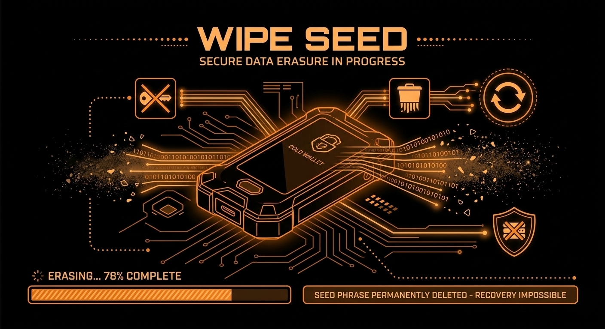
-
I주변에 카메라가 있는지 확인한다.
-
IICCTV, 스마트폰, 웹캠 여부도 확인한다.
-
III종이 니모닉이 안전한 곳에 있는지 확인한다.
-
I콜드카드 Q에 PIN을 입력하여 로그인한다.
-
IIAdvanced/Tools 선택
-
IIIDanger Zone 선택
-
IVSeed Functions → Destroy Seed 선택
-
V경고 화면이 나타납니다.
내용을 확인한 뒤 ENTER 로 최종 확인. -
VI기기에서 누르라는 번호 누름. 삭제완료.
기기는 니모닉이 없는 상태로 돌아갑니다.
(PIN은 그대로 유지됩니다.)
-
I기기를 지운다고 비트코인이 사라지는 게 아닙니다. 니모닉이 곧 지갑입니다.
-
II종이 니모닉만 있으면 새 기기에서 그대로 복원됩니다.
마스터 니모닉(24단어)으로부터 완전히 독립된 자식 니모닉을 파생시키는 기능입니다.
자식 니모닉은 마스터와 별개의 새로운 지갑처럼 동작하며,
자식 니모닉에서 마스터 니모닉을 역추적하는 것은 불가능합니다.
△ 인덱스 넘버를 잃어버리면 해당 지갑의 자산에 접근할 수 없습니다. 별도로 안전하게 보관하십시오.
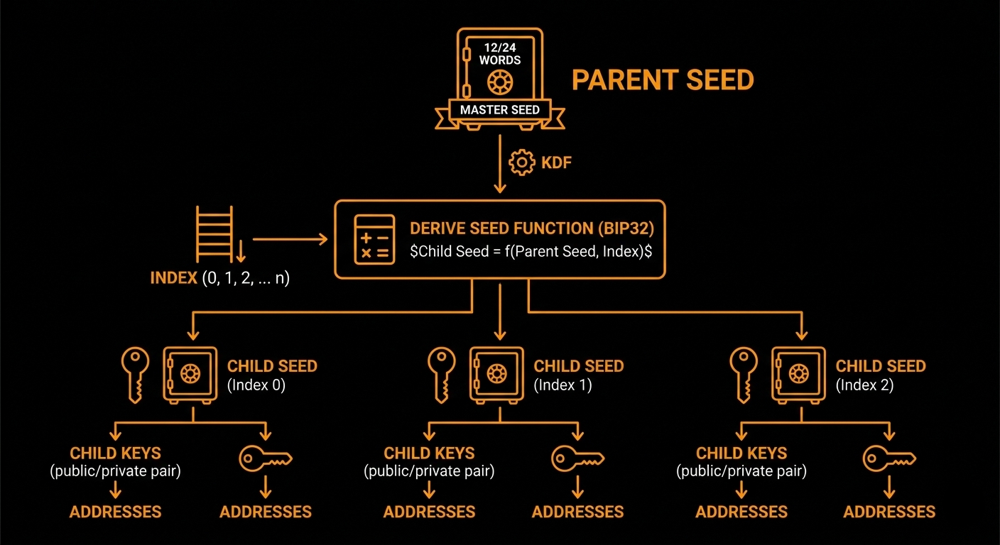
◆ 마스터 니모닉을 노출하지 않고 서드파티 앱·거래소에 별도 지갑을 제공할 때
◆ 목적별 지갑 분리 (일상 소비용 / 장기 보관용)
◆ 가족 구성원에게 독립된 지갑을 부여할 때
-
IAdvanced/Tools → Derive Seed B85
-
II단어 수 선택 — 12 words 또는 24 words
-
III인덱스 번호 입력 — 같은 마스터에서 서로 다른 자식을 만들 때 사용
(기본값 0, 최대 9999까지 설정 가능) -
IV화면에 표시된 자식 니모닉과 설정한 인덱스 넘버를 종이에 정확히 기록합니다.
-
VExport via NFC 또는 Export via QR로 내보내기 가능
(새 기기에 등록하거나 지갑 앱으로 가져올 때 사용)
◆ 동일한 마스터 + 동일한 인덱스 → 항상 동일한 자식 시드 생성됨
◆ 자식 시드는 콜드카드에 저장되지 않음 — 매번 새로 파생해야 함
◆ 자식 니모닉으로 만든 지갑은 마스터 지갑과 완전히 별개
△ 마스터 니모닉만 있으면 자식 시드를 언제든 재생성할 수 있습니다. 마스터 니모닉 + 인덱스 보관이 핵심입니다.
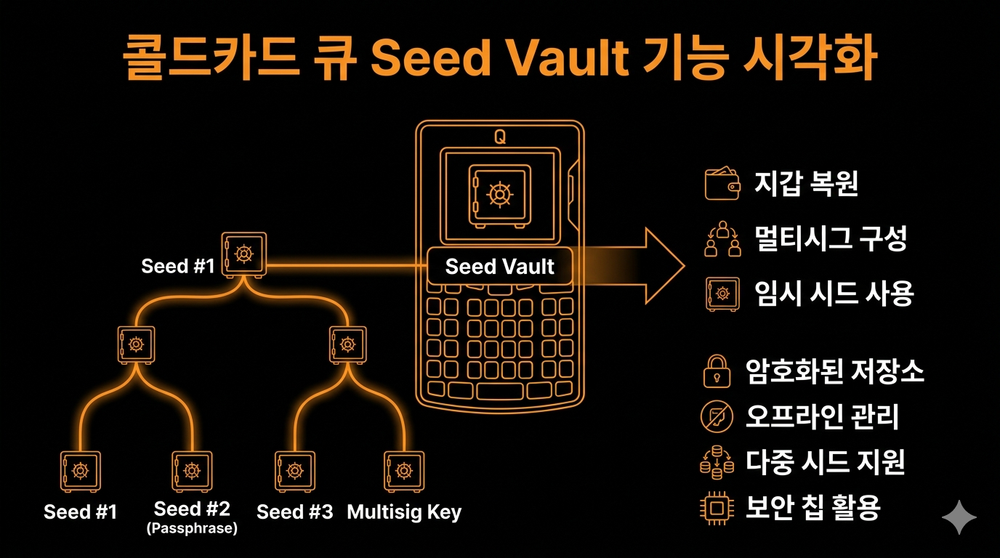
콜드카드 Q의 보안 칩(Secure Element)에 최대 20개의 시드를
암호화하여 저장·관리하는 기능입니다.
각 시드에 라벨을 붙여 구분할 수 있으며,
필요할 때 임시시드(Temp Seed)로 활성화해 사용합니다.
마스터 PIN으로 보호되므로 PIN 없이는 보관소 자체에 접근할 수 없습니다.
△ 시드 보관소는 펌웨어 v1.2.0 이상에서 활성화됩니다. Settings → Seed Vault에서 먼저 기능을 켜야 합니다.
◆ 목적별 지갑 분리 — 일상 소비용 / 장기 보관용 / 거래소 전용
◆ 가족 구성원별 독립 지갑 보관 (아내·자녀 시드)
◆ 비상용·상속용 시드를 한 디바이스에 안전하게 보관
◆ BIP85 자식 시드, 12/24단어 신규 시드, 외부 import 시드 등 형태에 상관없이 통합 관리
◆ 다중서명(Multisig) 참여 시드 보관 — 라벨로 어떤 멀티시그 키인지 식별
시드 보관소는 기본적으로 비활성화되어 있습니다. 사용 전에 콜드카드 Q 메뉴에서 직접 켜야 합니다.
-
I마스터 시드로 로그인된 상태에서 메인 메뉴 → Advanced/Tools
-
IIDanger Zone 선택
(주의: 이 메뉴엔 시드 노출·삭제 같은 위험 기능도 함께 모여 있습니다. 다른 항목은 건드리지 않도록 주의) -
IIISeed Vault 선택
-
IVEnable 선택 → 경고 메시지 확인 후 승인
-
V활성화 완료. 이후엔 Settings → Seed Vault에서 보관된 시드 목록을 확인·관리할 수 있습니다.
경로 요약 : Advanced/Tools › Danger Zone › Seed Vault › Enable
-
I보관할 시드를 먼저 임시시드(Temp Seed)로 활성화합니다.
예) Advanced/Tools → Temporary Seed → Generate / Import / Derive Seed B85 -
II활성화된 상태에서 Advanced/Tools → Seed Vault → Save Active Seed
-
III라벨을 입력합니다. 한글/영문 모두 가능
예) "비상용", "가족-홍길동", "Multisig-A 키1" -
IV마스터 PIN 기반으로 암호화되어 보안 칩에 저장됩니다.
-
ISettings → Seed Vault 또는 Advanced/Tools → Seed Vault
-
II목록에서 사용할 시드의 라벨을 선택
-
IIIUse This Seed 선택 → 해당 시드가 임시시드로 즉시 활성화됨
-
IV서명·주소생성 등 일반 작업 진행
-
V마스터 시드로 복귀: 재부팅 또는 Restore Master
-
ISeed Vault 목록에서 대상 시드 선택
-
IIRename 으로 라벨 수정, 또는 Delete 로 영구 삭제
-
III삭제 시 콜드카드에서만 지워지며, 원본 니모닉(종이 백업)은 그대로 유효
◆ 보관소의 시드는 평문(plaintext)으로 내보낼 수 없음 — NFC/QR/SD 모두 차단
◆ 마스터 PIN을 잃으면 보관소 전체에 접근 불가 → 각 시드의 종이 백업은 반드시 별도 보관
◆ 디바이스 분실/고장 시: 종이 백업으로 복구 (보관소는 디바이스에 묶여 있음)
◆ 펌웨어 업데이트 시 보관소 데이터는 유지됨
◆ Wipe LCD(전체 초기화) 실행 시 보관소도 함께 삭제됨
◆ 최대 저장 개수: 20개 (펌웨어 버전에 따라 변동 가능)
△ 시드 보관소는 편의 기능이지 백업이 아닙니다. 시드 자산의 안전은 여전히 종이/금속 니모닉 백업이 책임집니다.
◆ 한 콜드카드에 여러 지갑을 안전하게 보관·전환
◆ 마스터 PIN이 보관소의 유일한 열쇠
◆ 시드 형태(BIP39 단어/BIP85 자식/외부 import)에 무관하게 통합 관리
◆ 평문 export 불가 — 보안 우선 설계
◆ 별도 종이/금속 백업은 여전히 필수
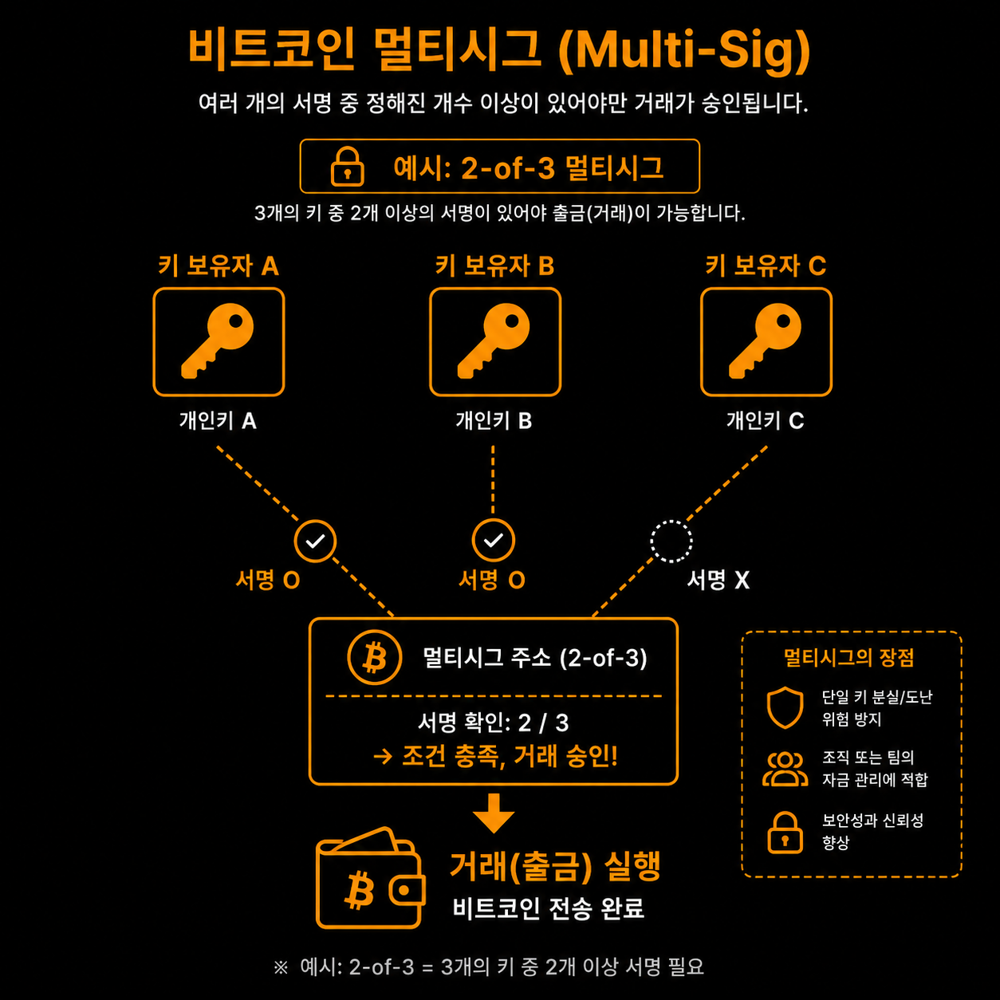
⚠ 멀티시그를 추천하지 않습니다
아래 내용은 멀티시그의 동작 원리와 리스크를 이해하기 위한 설명용 문서입니다. 단독 시드 + 패스프레이즈만으로도 충분히 안전한 자가관리(self-custody)가 가능합니다.
여러 개의 키(시드) 중 정해진 수만큼 서명해야 비트코인을 움직일 수 있는 지갑 구성입니다.
가장 흔한 형태가 2-of-3 — 키 3개 중 2개로 서명해야 출금 가능.
한 개의 키가 분실·도난당해도 자금이 안전한 다중 백업·분산 보관 모델로 알려져 있습니다.
단일 서명(single-sig) 지갑은 하나의 마스터 핑거프린트(MFP)로 식별되지만,
멀티시그는 그런 게 없습니다.
각 코사이너(cosigner) 시드가 자기 MFP만 가질 뿐, "이 멀티시그 지갑의 MFP" 같은 단일 식별자는 존재하지 않습니다.
덕분에 시드 1개를 도난당한 공격자는 그 시드가 멀티시그의 일부인지조차
알 방법이 없습니다 — 평범한 single-sig 지갑처럼 보일 뿐 (그리고 그 지갑은 비어있음).
Output Descriptor는 멀티시그 지갑이 어떻게 구성됐는지를 기록한 텍스트 형식의 설계도입니다.
예) wsh(sortedmulti(2, [fp1/...]xpub1, [fp2/...]xpub2, [fp3/...]xpub3))
포함되는 정보:
◆ 서명 임계치 (예: 2-of-3)
◆ 각 코사이너의 확장공개키(xpub) + 파생 경로
◆ 스크립트 타입 (wsh, sh-wsh 등)
콜드카드 Q는 descriptor를 SD/NFC로 import·export 할 수 있어 멀티시그 구성을 파일 한 장으로 보존할 수 있습니다.
주의: descriptor에는 공개키만 들어있어 자금을 움직일 수는 없지만, 잔액·거래내역은 누구나 조회 가능한 청사진입니다.
◆ 시드를 여러 개 만들고 따로 보관해야 함 (각각 종이/금속 백업)
◆ descriptor 파일도 별도 보관 (없으면 복구 불가)
◆ 코사이너 디바이스도 분산 보관 (집·은행·신뢰인 등)
◆ 한 시드라도 분실하면 임계치를 못 채워 자금이 영영 잠길 수 있음
◆ 출금 절차가 복잡 — PSBT 작성 → 디바이스 A 서명 → 디바이스 B 서명 → 결합 → 방송
◆ 가족/상속인이 절차를 익히기 어려움
실패 사례 대다수가 해킹이 아닌 "나 자신의 실수로 키·디스크립터를 잃어버린 경우"입니다.
△ 관리해야 할 비밀이 1개에서 N+1개(시드 N개 + descriptor)로 늘어납니다. 본인 사고·치매·이사·화재 시 한 군데만 망가져도 회복 불가능한 시나리오가 생깁니다.
가정: 2-of-3 멀티시그 (시드 A · 시드 B · 시드 C). 시드 B는 패스프레이즈로 보호된 임시시드로 사용.
-
1차시드 B의 24단어 단독 유출
→ 패스프레이즈가 없으므로 공격자가 보는 지갑은 빈 지갑
→ 멀티시그의 존재 자체를 알 수 없음
결과: 공격자 빈손 ✅ -
2차시드 B + 패스프레이즈 유출
→ 멀티시그 키 1개 확보
→ 그러나 2-of-3이라 단독 출금 불가
→ 그 시드 B를 single-sig로 열어봐도 멀티시그 자금은 보이지 않음 (서로 다른 주소)
결과: 자금 안전 ✅ -
3차시드 B + 패스프레이즈 + descriptor 유출
→ 공격자가 멀티시그 구조와 잔액을 파악 (감시 가능)
→ 하지만 키 1개로는 서명 임계치 미달 → 출금 불가
→ 다른 시드(A 또는 C)를 추가로 노릴 동기 발생 (위험 신호)
결과: 출금은 불가하지만 감시·압박은 가능 ⚠ -
4차시드 B + 시드 A 동시 유출 (or 시드 C)
→ 처음으로 서명 임계치 2개 충족
→ descriptor가 없어도 유출된 두 시드의 xpub 조합으로 멀티시그 주소 재구성 가능
결과: 자금 도난 가능 ⚠️
요약: 멀티시그는 1차·2차·3차 유출에는 강하지만, 두 시드가 동시에 털리는 순간 single-sig와 동일하게 위험합니다.
결국 안전성은 "시드들을 얼마나 독립적으로·분산하여 보관하느냐"에 달려 있고, 이 분산 관리가
대부분의 사용자에겐 너무 어렵습니다.
⚠ 멀티시그를 추천하지 않습니다
대다수 사용자에게 더 안전하고 더 단순한 선택은
콜드카드 1대 + 24단어 시드 + 강한 패스프레이즈 + 종이·금속 백업입니다.
멀티시그는 큰 금액·기관·상속 설계 등 분명한 필요가 있을 때만 고려하시고,
그때도 절차에 익숙한 전문가와 함께 설계하시기 바랍니다.
1 와치온리앱에서 주문서를 만든다. (송금 정보)
2 콜드카드(서명기기)로 주문서를 받아 서명을 한다.
3 와치온리앱에서 서명된 주문서를 받아 그 송금 정보를 비트코인 노드(Node)들에게 전파한다. (브로드캐스트)
△ 콜드카드는 서명기기며 인터넷에 연결되지 않습니다.
-
I와치온리 앱 실행 → 받을 지갑 터치 → 받기 터치 → 수신 주소를 확인
-
II콜드카드 Q의 주소탐색기로 동일한 주소인지 반드시 대조 확인
(와치온리앱을 2개 이상 설치하여 교차검증도 가능) -
III확인된 주소의 QR 코드를 송금인에게 전달
※ 비트코인 주소는 매번 달라집니다. 항상 새 주소를 사용하는 것이 프라이버시에 유리합니다.
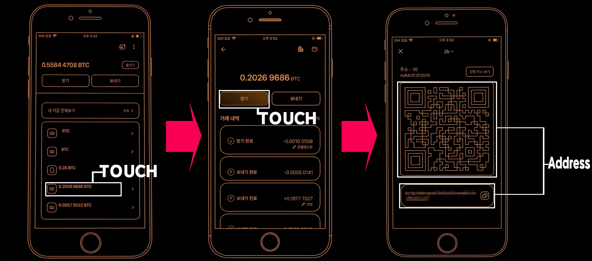
-
I돈을 보낼 주소 터치
-
II보내기 터치
-
III보낼 금액을 입력 → (bc1q...) or QR코드로 받는 주소 입력
-
IV금액·수수료 확인 후 완료 — 송금 트랜잭션이 완성됨.
-
VQR이 생성되면 대기
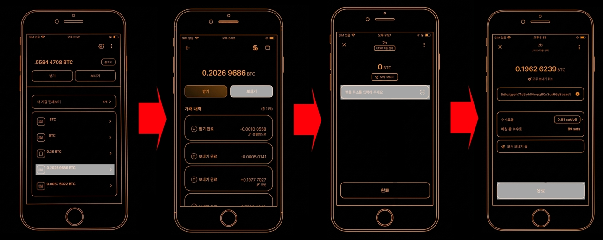
-
I와치온리앱에서 생성된 QR을 콜드카드 Q 카메라로 스캔
※ 스캐너가 위에 있으므로 직각으로 스캔해야함.
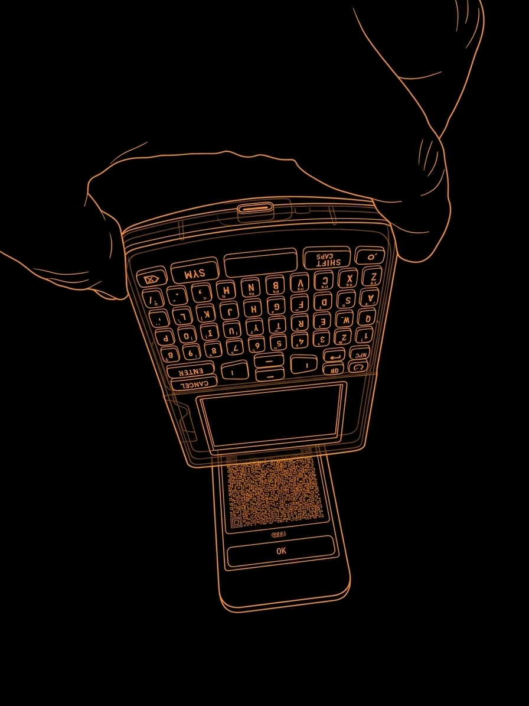
-
II콜드카드 화면에서 송금 내역 확인 — 주소·금액·수수료를 반드시 눈으로 검증
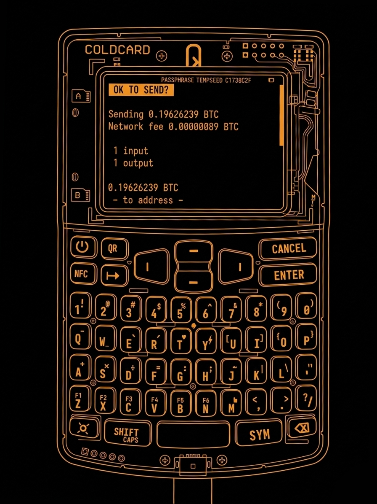
-
III콜드카드에서 서명(Sign) 승인
-
IV서명된 트랜잭션 QR이 화면에 뜨면 대기
-
I다음
-
II서명된 트랜잭션 QR을 와치온리 앱으로 스캔 → 브로드캐스트
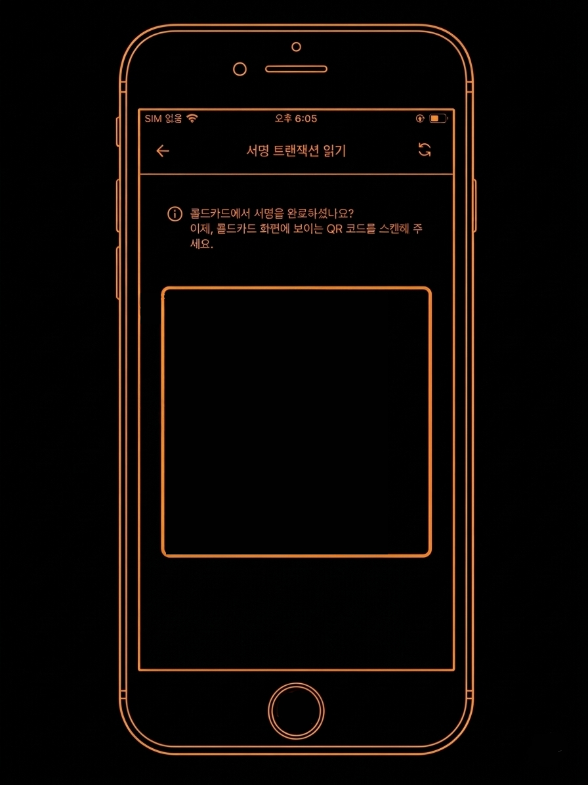
◆ 콜드카드는 서명만 담당합니다. 인터넷 전송은 항상 와치온리 앱이 처리합니다.
◆ 송금 전 주소를 반드시 콜드카드 화면에서 직접 눈으로 확인하십시오.
△ 수수료가 지나치게 높거나 주소가 다르면 즉시 취소하십시오.